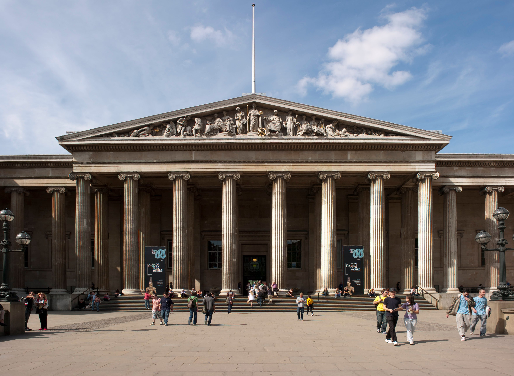
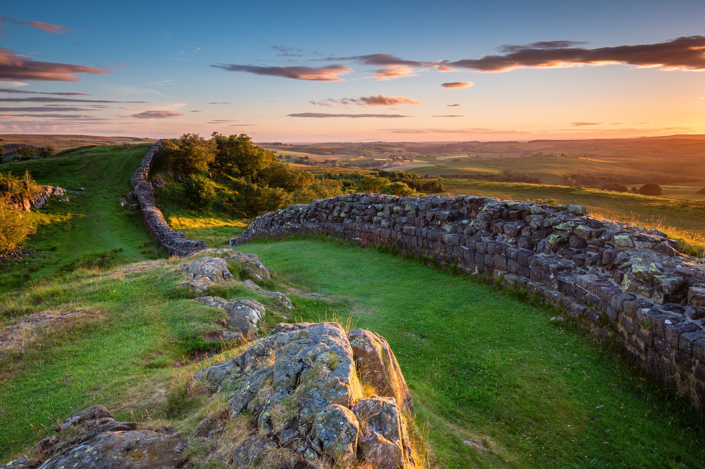
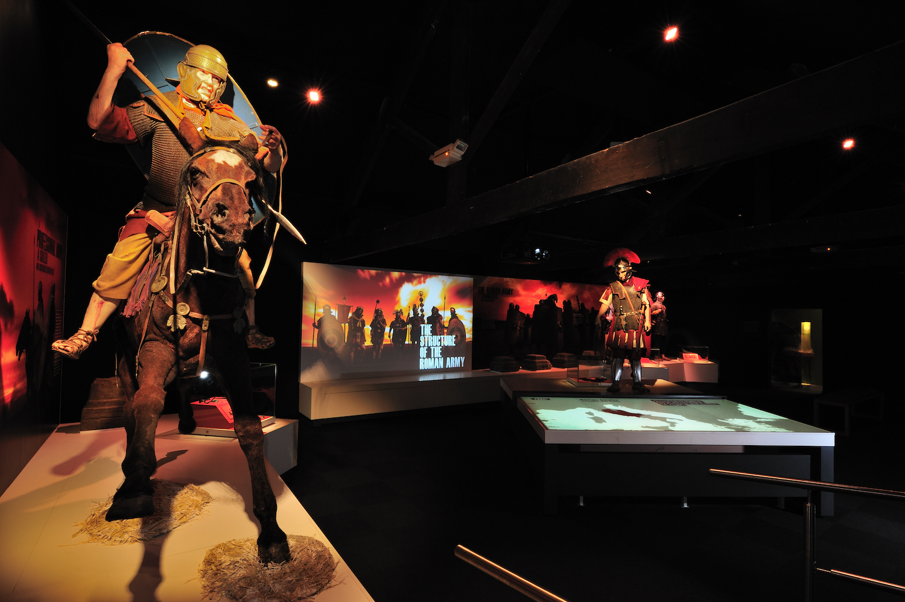

Stonehenge is probably one of the most popular tourist attractions.
As you might be aware of, Stonehenge is an ancient monument from many hundreds of years ago.
How the structure survived for so long and how it could possibly be created by such primitive humans is a mystery to this day, despite much speculation and many theories.
The address is Amesbury, Salisbury.
Can you figure out what mysteries lie in the stones?

The British Museum
The British Museum is extremely well known for being a catalogue of all human history. It is extremely expansive and is filled with history from many countries all over the world.
Are you ready to learn about the earth's past? Visit The British Museum to see all the wonders of our planet!
It is located at Great Russell Street, London.

Hadrian's wall
Hadrian's wall is almost like a mini-Wall of China! It is a small stone wall that spans from Bowness-on-Solway all the way over to Wallsend. It was created by the Romans as defence for the Britannia province, almost two thousand years ago!
As previously mentioned, it starts and ends at opposite sides of England, spanning the entire country! Isn't that fascinating?
Come witness this ancient monument from Rome today!
The route starts at Wallsend, Tyne and Wear, and ends at Bowness-on-Solway, Cumbria.

Roman Army Museum
For those more interested in the history of Hadrian's wall or that of the romans, there is a museum located around the halfway point of the wall. It's called Roman Army Museum.
They have many interactive displays, such as movie showings, and many other interesting artifacts. The address of the museum is Brampton, CA8 7HF.
Come discover England's past with the Roman Empire!
The Big Ben is a very well-known tourist attraction. Many people visit it annually, for good reason!
Big Ben is in Westminster, London and is next to the River Thames.
You'll find that the architecture of Big Ben is very impressive, and the sheer volume of the bell is quite the experience to hear.
However, a common misconception is that Big Ben is the tower while Big Ben is the name of the clock located at the top!
The address is Westminster, London SW1A 0AA.